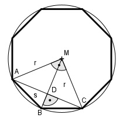
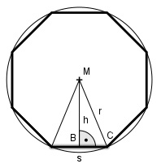

Aufgabe 204 Ein Brunnen hat als Grundfläche ein regelmäßiges Achteck von 15,4 m2. Wie groß ist eine Seite s des Achtecks?

Der Winkel bei M beträgt 90°, weil zwei Teil- dreiecke des Achtecks mit einem Mittelpunktswinkel von 45° nebeneinander liegen. Satz von Pythagoras im Dreieck ACM: AC2 = r2 + r2 = 2r2 |√ AC = r * √2 Satz von Pythagoras im Dreieck ABD: s2 = AD2 + BD2 AC r AD = ---- = --- * √2 2 2 BD = r – DM DM = AD, weil Winkel BAM = Winkel CMA = 45° r BD = r - --- * √2 2 r r s2 = (--- * √2)2 + (r - --- * √2)2 2 2 r2 r r2 s2 = ---- + r2 - 2 * r * --- * √2 + ---- 2 2 2 s2 = 2r2 - r2√2 s2 = r2(2 - √2) |√ s = r *
s * h A = n * ------- n Anzahl der Ecken 2 Satz von Pythagoras im Dreieck BCM: s s r2 = h2 + (---)2 |-(---)2 2 2 s2 h2 = r2 - ---- 4 4r2 - s2 h2 = ---------- |√ 4 s eingesetzt: 15,4 = 15,4 = 2 * r * 15,4 = 2 * r * 15,4 = 2r2 * * 15,4 = 2r2 * 15,4 = 2r2 *√2 |:2 7,7 = r2 * √2 | :√2 r2 = 5,4 |√ r = 2,3 m s = r * s = 2,3 m * s = 1,8 m